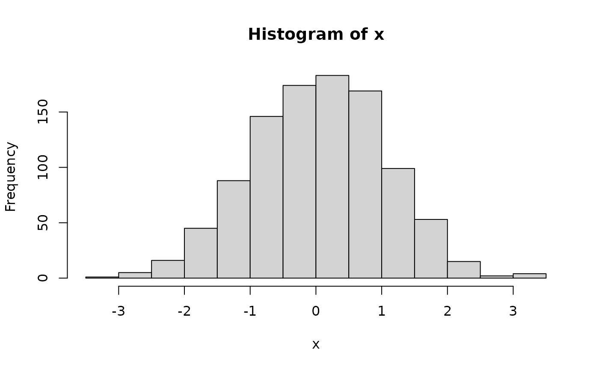

R is an interactive programming language emphasizing statistical analysis and visualization. It is very useful for both light-weight data manipulation, and for advanced statistical analysis and visualization. R is available as Free Software under the GNU General Public License. It is highly extensible through user-contributed ‘packages’, of which there are more than 20,000 available through CRAN (Comprehensive R Archive Network) and more than 2,000 through Bioconductor (for high-throughput genomic data).
R
1 + 2
#> [1] 3
sqrt(2)
#> [1] 1.414214Vectors and variables
R usually works on vectors of values
c(1, 2, 3)
#> [1] 1 2 3It usually makes sense to assign a vector of values to a variable, to make it easy to repeatedly reference the same set of values
x <- c(1, 2, 3)
x
#> [1] 1 2 3Types of vectors
- logical –
c(TRUE, FALSE) - integer –
c(1, 2, 3) - numeric –
c(1.41, 2.30, 3.14159) - character –
c("May", "June", "July") - complex
Statistical concepts
- ‘Missing’ values
- use
NAin any vector, e.g.,c(1, 2, NA, 3)
- use
- factor with levels
Often, in an experimental design, there are defined number of groups, e.g., ‘treatment’ and ‘control’
-
Use a
factorto represent these values
Operations, e.g., numeric
-
two vectors – element-wise
-
vector and scalar – scalar is ‘recycled’ to the same length as vector, and then element-wise operations are preformed
x * 2 #> [1] 2 4 6
Common operations
-
logical –
&(‘and’),|(‘or’),!(not),==(element-wise equivalence)c(TRUE, TRUE, FALSE, FALSE) & c(TRUE, FALSE, TRUE, FALSE) #> [1] TRUE FALSE FALSE FALSE c(TRUE, TRUE, FALSE, FALSE) | c(TRUE, FALSE, TRUE, FALSE) #> [1] TRUE TRUE TRUE FALSE !c(TRUE, TRUE, FALSE, FALSE) #> [1] FALSE FALSE TRUE TRUE c(TRUE, TRUE, FALSE, FALSE) == c(TRUE, FALSE, TRUE, FALSE) #> [1] TRUE FALSE FALSE TRUE ## Fun! c(TRUE, FALSE, NA) & c(NA, NA, NA) #> [1] NA FALSE NA c(TRUE, FALSE, NA) | c(NA, NA, NA) #> [1] TRUE NA NA integer / numeric –
+,-,*. Comparison==,>,>=,<,<=. Many functions likelog(),sqrt(), …-
character –
paste()(paste two string togther),nchar(),substring()
Subsetting
data.frame
Organizing vectors into columns
df <- data.frame(
Month = month, Year = year,
Temperature = c(20, 22, 24, 25)
)
df
#> Month Year Temperature
#> 1 April 2020 20
#> 2 May 2021 22
#> 3 June 2022 24
#> 4 July 2023 25Subsetting
-
columns
df[, c("Month", "Temperature")] #> Month Temperature #> 1 April 20 #> 2 May 22 #> 3 June 24 #> 4 July 25 -
rows
df[c(1, 3), ] #> Month Year Temperature #> 1 April 2020 20 #> 3 June 2022 24
Column access
-
$; can be useful to subsetdf$Temperature #> [1] 20 22 24 25 df[df$Temperature > 22,] #> Month Year Temperature #> 3 June 2022 24 #> 4 July 2023 25 -
[[; useful when a variable defines the column of interestcolumn_of_interest <- "Temperature" df[[ column_of_interest ]] #> [1] 20 22 24 25
Functions
x <- rnorm(100)
x
#> [1] 1.24222665 -0.17786519 -0.08370363 -1.32203774 0.67797773 -0.70351738
#> [7] 0.32110286 1.63932990 1.18438382 0.73769694 -1.18861271 -0.89554854
#> [13] -0.34141596 -0.09559067 1.30176330 1.28728466 -0.84409388 -0.67312416
#> [19] 1.75489436 0.23733336 -0.94620379 0.06731612 0.85425597 1.09086489
#> [25] 2.05536766 -0.28442738 -1.50561777 -1.87461204 -0.07417087 0.11153391
#> [31] 0.32686835 1.08111505 -0.12900516 -0.34960330 -0.02609635 0.55320955
#> [37] 1.31216858 2.41263627 0.07821612 -0.16544281 -1.28024747 2.02791878
#> [43] -0.87991322 -1.20032002 -0.09984092 0.96968162 -1.34857243 -0.40506106
#> [49] -1.47905600 0.71851421 1.67414739 -1.71651225 -0.74120264 0.73123812
#> [55] -1.11715090 1.10863662 -0.01438954 -0.49792460 0.25661743 -1.93782994
#> [61] -0.35233755 -1.29556352 0.64067102 -1.12725496 -0.67697212 0.93433037
#> [67] 1.69571555 -1.14479889 -0.78961189 -0.50781727 0.51878649 -0.68633107
#> [73] 0.40299893 -1.15025061 0.77937321 0.36768229 0.09350540 1.14291652
#> [79] 1.29334896 -0.88937319 0.24693133 -1.05343645 0.66895601 -2.12753540
#> [85] -0.66694479 0.25945766 -0.22275404 -0.20673672 0.71397382 1.11594374
#> [91] 0.14398025 0.04688927 -1.63646993 -0.80899857 -0.42989939 -1.99868244
#> [97] -0.87124073 -0.20068497 -0.69849992 1.17008696Look up the help page for rnorm –
?rnorm
Plot a histogram using hist()

Generate two equal-length vectors and visualize as a scatter plot
y <- x + rnorm(1000) # element-wise addition; each element of 'y' is
# the sum of two random variables
plot(x, y) # one way to plot
plot(y ~ x) # another way to plot -- 'y as a function of x'Place x and y into a
data.frame, and use to plot
df <- data.frame(X = x, Y = y)
plot(Y ~ X, df)Subset to just the positive quadrant
plot(Y ~ X, df[df$X > 0 & df$Y > 0,])A built-in data frame – mtcars
mtcars
#> mpg cyl disp hp drat wt qsec vs am gear carb
#> Mazda RX4 21.0 6 160.0 110 3.90 2.620 16.46 0 1 4 4
#> Mazda RX4 Wag 21.0 6 160.0 110 3.90 2.875 17.02 0 1 4 4
#> Datsun 710 22.8 4 108.0 93 3.85 2.320 18.61 1 1 4 1
#> Hornet 4 Drive 21.4 6 258.0 110 3.08 3.215 19.44 1 0 3 1
#> Hornet Sportabout 18.7 8 360.0 175 3.15 3.440 17.02 0 0 3 2
#> Valiant 18.1 6 225.0 105 2.76 3.460 20.22 1 0 3 1
#> Duster 360 14.3 8 360.0 245 3.21 3.570 15.84 0 0 3 4
#> Merc 240D 24.4 4 146.7 62 3.69 3.190 20.00 1 0 4 2
#> Merc 230 22.8 4 140.8 95 3.92 3.150 22.90 1 0 4 2
#> Merc 280 19.2 6 167.6 123 3.92 3.440 18.30 1 0 4 4
#> Merc 280C 17.8 6 167.6 123 3.92 3.440 18.90 1 0 4 4
#> Merc 450SE 16.4 8 275.8 180 3.07 4.070 17.40 0 0 3 3
#> Merc 450SL 17.3 8 275.8 180 3.07 3.730 17.60 0 0 3 3
#> Merc 450SLC 15.2 8 275.8 180 3.07 3.780 18.00 0 0 3 3
#> Cadillac Fleetwood 10.4 8 472.0 205 2.93 5.250 17.98 0 0 3 4
#> Lincoln Continental 10.4 8 460.0 215 3.00 5.424 17.82 0 0 3 4
#> Chrysler Imperial 14.7 8 440.0 230 3.23 5.345 17.42 0 0 3 4
#> Fiat 128 32.4 4 78.7 66 4.08 2.200 19.47 1 1 4 1
#> Honda Civic 30.4 4 75.7 52 4.93 1.615 18.52 1 1 4 2
#> Toyota Corolla 33.9 4 71.1 65 4.22 1.835 19.90 1 1 4 1
#> Toyota Corona 21.5 4 120.1 97 3.70 2.465 20.01 1 0 3 1
#> Dodge Challenger 15.5 8 318.0 150 2.76 3.520 16.87 0 0 3 2
#> AMC Javelin 15.2 8 304.0 150 3.15 3.435 17.30 0 0 3 2
#> Camaro Z28 13.3 8 350.0 245 3.73 3.840 15.41 0 0 3 4
#> Pontiac Firebird 19.2 8 400.0 175 3.08 3.845 17.05 0 0 3 2
#> Fiat X1-9 27.3 4 79.0 66 4.08 1.935 18.90 1 1 4 1
#> Porsche 914-2 26.0 4 120.3 91 4.43 2.140 16.70 0 1 5 2
#> Lotus Europa 30.4 4 95.1 113 3.77 1.513 16.90 1 1 5 2
#> Ford Pantera L 15.8 8 351.0 264 4.22 3.170 14.50 0 1 5 4
#> Ferrari Dino 19.7 6 145.0 175 3.62 2.770 15.50 0 1 5 6
#> Maserati Bora 15.0 8 301.0 335 3.54 3.570 14.60 0 1 5 8
#> Volvo 142E 21.4 4 121.0 109 4.11 2.780 18.60 1 1 4 2Plot miles per gallon mpg as a function of number of
cylinders, cyl
plot(mpg ~ cyl, mtcars) # scatter plotNote though that cyl should probably be a factor – a
finite number of possible values.
mtcars$cyl
#> [1] 6 6 4 6 8 6 8 4 4 6 6 8 8 8 8 8 8 4 4 4 4 8 8 8 8 4 4 4 8 6 8 4
factor(mtcars$cyl) # 'levels' have a sensible default
#> [1] 6 6 4 6 8 6 8 4 4 6 6 8 8 8 8 8 8 4 4 4 4 8 8 8 8 4 4 4 8 6 8 4
#> Levels: 4 6 8Treat cyl as a factor when plotting
Packages
Examples:
- dplyr: data manipulation based on ‘tidy’ principles.
- ggplot2: plotting using the ‘grammar of graphics’
Installation
-
Packages only need to be installed once
## also possible to use RStudio 'Packages' panel... install.packages("dplyr", repos = "https://CRAN.R-project.org")
Use
-
Attach packages in each R session where you would like to use it
tibble versus data.frame
only some values displayed – really useful even for this small data set
-
column data types indicated
tbl <- tibble(mtcars) tbl #> # A tibble: 32 × 11 #> mpg cyl disp hp drat wt qsec vs am gear carb #> <dbl> <dbl> <dbl> <dbl> <dbl> <dbl> <dbl> <dbl> <dbl> <dbl> <dbl> #> 1 21 6 160 110 3.9 2.62 16.5 0 1 4 4 #> 2 21 6 160 110 3.9 2.88 17.0 0 1 4 4 #> 3 22.8 4 108 93 3.85 2.32 18.6 1 1 4 1 #> 4 21.4 6 258 110 3.08 3.22 19.4 1 0 3 1 #> 5 18.7 8 360 175 3.15 3.44 17.0 0 0 3 2 #> 6 18.1 6 225 105 2.76 3.46 20.2 1 0 3 1 #> 7 14.3 8 360 245 3.21 3.57 15.8 0 0 3 4 #> 8 24.4 4 147. 62 3.69 3.19 20 1 0 4 2 #> 9 22.8 4 141. 95 3.92 3.15 22.9 1 0 4 2 #> 10 19.2 6 168. 123 3.92 3.44 18.3 1 0 4 4 #> # ℹ 22 more rows
Pipes
-
|>takes the value on the ‘left-hand side’ and uses it as the first argument in the function on the ‘right-hand side’tbl <- mtcars |> tibble() this can be a very useful paradigm – ‘take the mtcars data set, and apply the tibble function to it’ – and allows a series of related operations to be chained together
Help!!!
RStudio
R
For help on individual commands, use
?at the command line, e.g.,?data.frame-
For package help, try
vignette(package = "dplyr") #> Vignettes in package 'dplyr': #> #> colwise Column-wise operations (source, html) #> base dplyr <-> base R (source, html) #> grouping Grouped data (source, html) #> dplyr Introduction to dplyr (source, html) #> programming Programming with dplyr (source, html) #> rowwise Row-wise operations (source, html) #> two-table Two-table verbs (source, html) #> in-packages Using dplyr in packages (source, html) #> window-functions Window functions (source, html) #> vignette(package = "dplyr", "dplyr")
Other sources of help
Google
-
ChatGPT & other AI
- can be amazingly helpful, especially if asked to perform specific tasks
- also useful to ‘explain this code’ or ‘add comments to this code’
- what out for halucinations!
Session information
sessionInfo()
#> R version 4.3.3 (2024-02-29)
#> Platform: x86_64-pc-linux-gnu (64-bit)
#> Running under: Ubuntu 22.04.4 LTS
#>
#> Matrix products: default
#> BLAS: /usr/lib/x86_64-linux-gnu/openblas-pthread/libblas.so.3
#> LAPACK: /usr/lib/x86_64-linux-gnu/openblas-pthread/libopenblasp-r0.3.20.so; LAPACK version 3.10.0
#>
#> locale:
#> [1] LC_CTYPE=C.UTF-8 LC_NUMERIC=C LC_TIME=C.UTF-8
#> [4] LC_COLLATE=C.UTF-8 LC_MONETARY=C.UTF-8 LC_MESSAGES=C.UTF-8
#> [7] LC_PAPER=C.UTF-8 LC_NAME=C LC_ADDRESS=C
#> [10] LC_TELEPHONE=C LC_MEASUREMENT=C.UTF-8 LC_IDENTIFICATION=C
#>
#> time zone: UTC
#> tzcode source: system (glibc)
#>
#> attached base packages:
#> [1] stats graphics grDevices utils datasets methods base
#>
#> other attached packages:
#> [1] dplyr_1.1.4
#>
#> loaded via a namespace (and not attached):
#> [1] vctrs_0.6.5 cli_3.6.2 knitr_1.45 rlang_1.1.3
#> [5] xfun_0.42 highr_0.10 purrr_1.0.2 generics_0.1.3
#> [9] textshaping_0.3.7 jsonlite_1.8.8 glue_1.7.0 htmltools_0.5.7
#> [13] ragg_1.3.0 sass_0.4.9 fansi_1.0.6 rmarkdown_2.26
#> [17] tibble_3.2.1 evaluate_0.23 jquerylib_0.1.4 fastmap_1.1.1
#> [21] yaml_2.3.8 lifecycle_1.0.4 memoise_2.0.1 compiler_4.3.3
#> [25] fs_1.6.3 pkgconfig_2.0.3 systemfonts_1.0.6 digest_0.6.35
#> [29] R6_2.5.1 tidyselect_1.2.1 utf8_1.2.4 pillar_1.9.0
#> [33] magrittr_2.0.3 bslib_0.6.1 tools_4.3.3 pkgdown_2.0.7
#> [37] cachem_1.0.8 desc_1.4.3